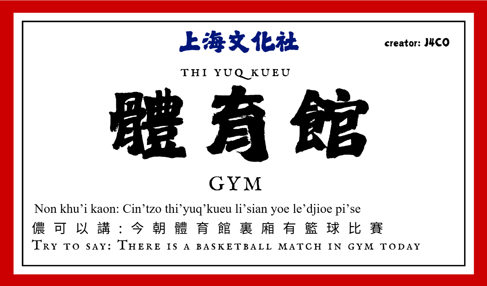
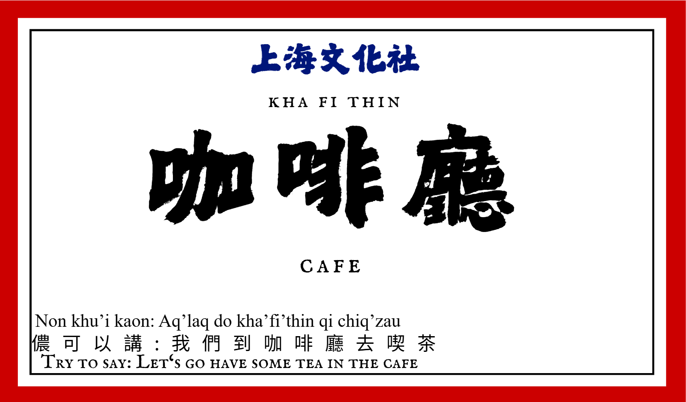

A student-led language & culture project
A language.
A city.
A story.
Shanghai is more than the streets on a map. Its stories live in the words people speak. We began with everyday places around our school—and the voices that give them meaning.


沪Shanghainese
100+
Physical word cards created for our school project
26
Audio-enabled cards in this online collection
上海话
One local language, many everyday connections
Listen & discover
Small words, vivid places.
From the library to the gym, each card pairs an everyday place or object with Shanghainese audio. Click a card to hear the word and a sample sentence.
Behind the project
Making a familiar place sound different.
We designed and placed more than 100 Shanghainese word cards around our school. A staircase, a cafeteria, or a library became an invitation to notice a language woven into Shanghai's everyday life.
But a written card only tells part of the story. The online collection adds recordings of pronunciations and example sentences, so visitors can hear what text alone cannot convey.
How the project came together →“A map can show where a place is. Language can hint at what it feels like to belong there.”
The idea behind Shanghai Culture Club